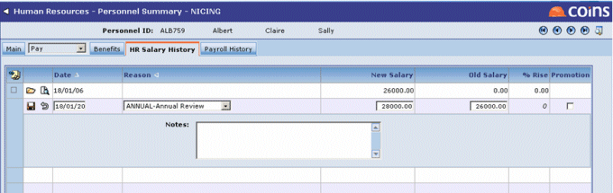
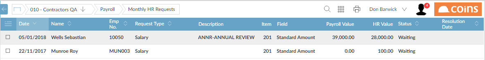
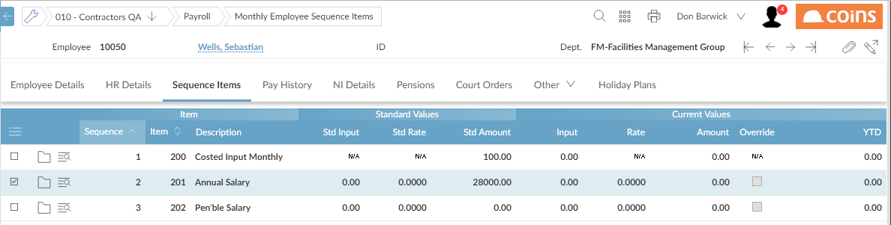

As an example, say HR to Payroll linking via a requests workbench has been set up for salary data and the salary for a person in HR (who is linked to a monthly Payroll employee) is changed from £26,000 to £28,000

This causes a waiting request to appear on the monthly HR Requests Workbench in Payroll as shown in the screen shot below, and an action (with a link to the requests workbench page) to appear on the Home > Activity Workbench page for each user listed in the HRREQUSR parameter.
On the HR Requests Workbench, Payroll users can review changes made by HR. Each row shows the date the change was applied in HR, the name, the employee number, the type of request (salary or employee/employer benefit), a more detailed description (for benefits only), the Payroll item number and field, the Payroll and HR values, the status of the request (one of "Waiting", "Approved" or "Rejected"), and the date the request was approved or rejected. At the appropriate period and during the input stage of the Payroll cycle, a Payroll user can approve (or reject) requests using the appropriate action from the action drop down list. The page is normally

If the salary change shown above is approved, the HR value gets pushed into Payroll as shown below.

HR changes will only cause requests to be generated when the linked Payroll employee already has the appropriate pay item in their sequence (that is, it will not add the item to their sequence).